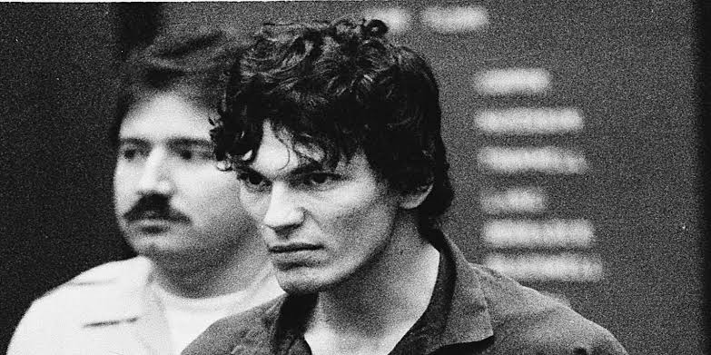
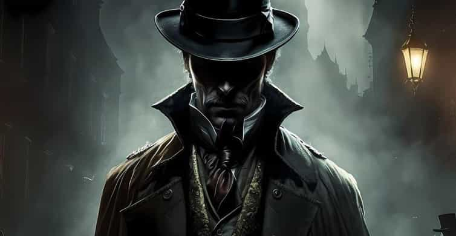
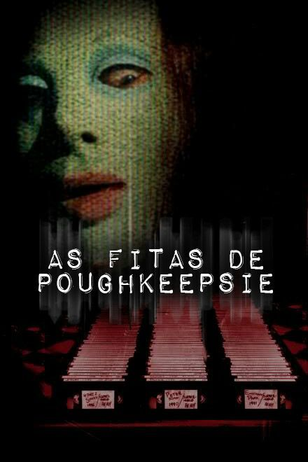

Aqui você poderá ver o processo de uma marca em desenvolvimento. E assim poderá acompanhar essa longa jornada de uma jovem na criminalogia.
Sobre
Darei início pontuando os 4 maiores serial killers do mundo e contando um pouquinho do fim deles. E ao fim, irei deixar o nome de um filme com essa temática para caso alguém se interesse.
Segue os maiores da história:
1.Ted Bundy
Ted Bundy, nascido em 24 de novembro de 1946, foi um dos serial killers mais notórios dos Estados Unidos. Durante a década de 1970, ele sequestrou, estuprou e assassinou dezenas de jovens mulheres em vários estados, incluindo Washington, Oregon, Colorado, Utah e Flórida. Bundy era conhecido por sua aparência charmosa e inteligência, o que lhe permitia atrair suas vítimas facilmente. Ele frequentemente fingia estar ferido ou se passava por uma figura de autoridade para ganhar a confiança das mulheres antes de atacá-las.
Bundy foi preso pela primeira vez em 1975, mas conseguiu escapar duas vezes da custódia policial. Durante sua fuga, ele cometeu mais assassinatos na Flórida, incluindo o brutal ataque a uma fraternidade feminina na Universidade Estadual da Flórida. Em 1979, Bundy foi condenado à morte pelo assassinato de duas estudantes universitárias e, posteriormente, por outros crimes. Ele foi executado na cadeira elétrica em 24 de janeiro de 1989
2. BTK
Dennis Rader, conhecido como BTK (sigla para "Bind, Torture, Kill" - Amarrar, Torturar, Matar), é um dos serial killers mais infames dos Estados Unidos. Nascido em 9 de março de 1945, Rader cometeu seus crimes entre 1974 e 1991, matando pelo menos dez pessoas na região de Wichita e Park City, Kansas. Ele era conhecido por enviar cartas provocativas à polícia e à mídia, detalhando seus crimes e zombando das autoridades.
Rader levava uma vida aparentemente normal, trabalhando como instalador de sistemas de segurança e sendo ativo em sua igreja local. No entanto, ele nutria fantasias sádicas desde a infância, que eventualmente se manifestaram em seus crimes brutais. Ele foi finalmente capturado em 2005, após retomar a comunicação com a polícia, o que levou à sua prisão. Rader confessou seus crimes e foi condenado a dez penas consecutivas de prisão perpétua, sem possibilidade de liberdade condicional.
3. The Night Stalker
 Ramirez, conhecido como “The Night Stalker”, foi um serial killer americano que aterrorizou a Califórnia entre 1984 e 1985. Nascido em 29 de fevereiro de 1960, em El Paso, Texas, Ramirez teve uma infância conturbada, marcada por abusos e influências negativas, incluindo um primo que lhe mostrou fotos de atrocidades cometidas durante a Guerra do Vietnã.
Ramirez cometeu uma série de invasões domiciliares, assassinatos, estupros e torturas, totalizando pelo menos 14 assassinatos confirmados e muitos outros crimes violentos. Ele frequentemente deixava símbolos satânicos nas cenas dos crimes, o que aumentava o pânico entre os moradores. Sua captura ocorreu em 31 de agosto de 1985, quando foi reconhecido por um grupo de cidadãos que o detiveram até a chegada da polícia.
Em 1989, Ramirez foi condenado por 13 assassinatos, 5 tentativas de assassinato, 11 agressões sexuais e 14 invasões domiciliares12. Ele foi sentenciado à morte, mas morreu de causas naturais em 7 de junho de 2013, enquanto aguardava a execução.
4. Jack-The ripper
Jack, o Estripador, é o pseudônimo dado a um infame assassino em série que aterrorizou o distrito de Whitechapel, em Londres, em 1888. Ele é conhecido por ter assassinado pelo menos cinco mulheres, todas prostitutas, de maneira brutal, com cortes na garganta e mutilações abdominais. Os crimes de Jack, o Estripador, nunca foram resolvidos, e sua identidade permanece um mistério até hoje.
O fim de Jack, o Estripador, é envolto em espec-ulações e teorias. Após os assassinatos de 1888, os ataques cessaram tão repentinamente quanto começaram. Algumas teorias sugerem que ele pode ter sido preso por outros crimes, internado em um asilo, ou até mesmo morto. Outras hipóteses incluem a possibilidade de ele ter simplesmente parado de matar ou mudado de local. A falta de evidências concretas e a ausência de novas vítimas atribuídas a ele após 1888 deixam seu destino final incerto.
Filmes
As fitas de poughkeepsie

É um filme de terror de 2007, dirigido por John Erick Dowdle. O filme é apresentado como um falso documentário, explorando os crimes de um serial killer através de fitas cassetes encontradas em uma casa abandonada. Essas fitas revelam uma década de torturas e assassinatos brutais, criando uma perturbadora coleção de provas criminais. O filme combina entrevistas com conhecidos das vítimas e materiais de arquivo das matanças, inserindo-se no gênero "found footage". A atmosfera sombria e realista do filme o tornou controverso e impactante no gênero de terror.